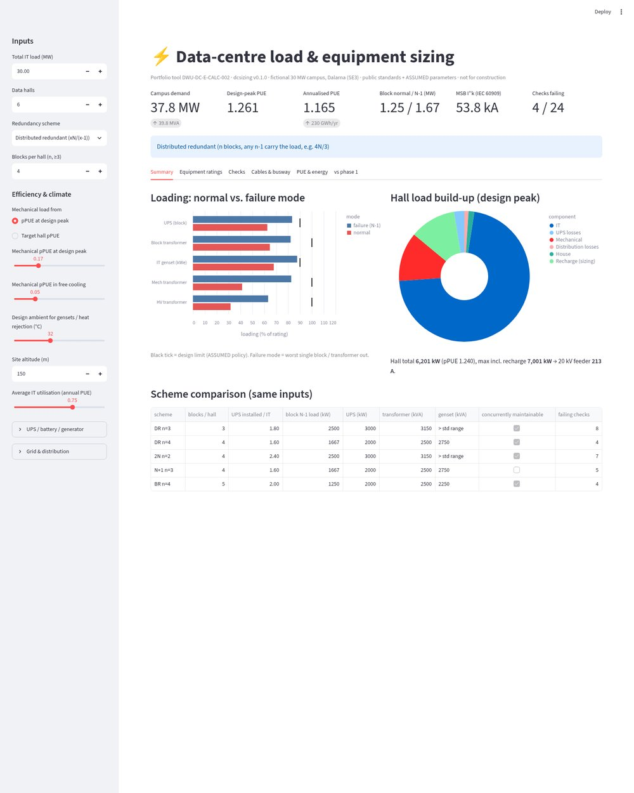

Portfolio / Project 02
dcsizing is a Python package and Streamlit app. It works from IT load to facility load, then sizes every power-train element in normal and failure modes and compares the result with the phase-1 ratings.
Reduced previews. The full-resolution originals are in the repository.

Other projects: 01 Design basis & single-line diagrams · 03 Short-circuit, protection & arc-flash study · 04 BESS in a grid-constrained data center · 05 Next-generation power architecture and commissioning (research and concept study)